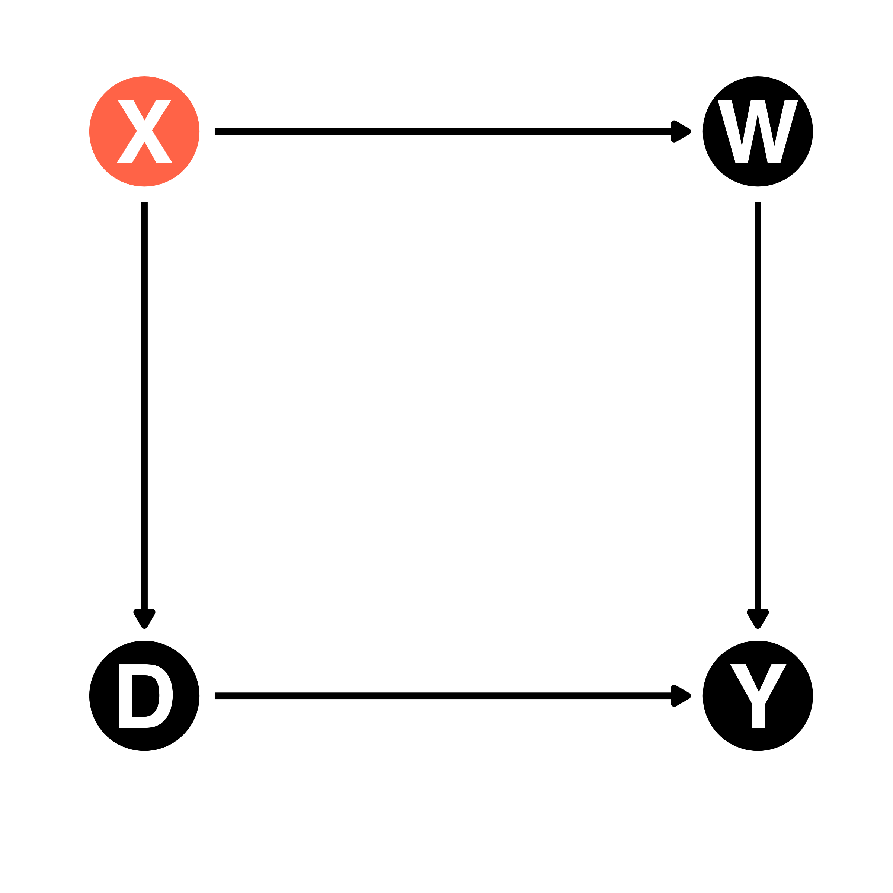

| ID | D | X | Y | Y(0) | Y(1) |
|---|---|---|---|---|---|
| 1 | 0 | 0 | 0 | 0 | 2 |
| 2 | 0 | 0 | -1 | -1 | 1 |
| 3 | 0 | 0 | 1 | 1 | 3 |
| 4 | 1 | 0 | 4 | 2 | 4 |
| 5 | 1 | 0 | 5 | 3 | 5 |
| 6 | 1 | 0 | -1 | -3 | -1 |
| 7 | 1 | 0 | 0 | -2 | 0 |
| 8 | 1 | 0 | 1 | -1 | 1 |
| 9 | 1 | 0 | 2 | 0 | 2 |
| 10 | 1 | 0 | 3 | 1 | 3 |
| 11 | 0 | 1 | 4 | 4 | 6 |
| 12 | 0 | 1 | 5 | 5 | 7 |
| 13 | 0 | 1 | 1 | 1 | 3 |
| 14 | 0 | 1 | 0 | 0 | 2 |
| 15 | 0 | 1 | 2 | 2 | 4 |
| 16 | 0 | 1 | 3 | 3 | 5 |
| 17 | 0 | 1 | 6 | 6 | 8 |
| 18 | 1 | 1 | 4 | 2 | 4 |
| 19 | 1 | 1 | 5 | 3 | 5 |
| 20 | 1 | 1 | 6 | 4 | 6 |
社会科学における因果推論
5/ 回帰分析
最小二乗法
- 残差の二乗和は141.13（左）、58.82（中）、66.55（右）
- RMSEはそれぞれ3.76、2.43、2.58

処置変数が内生変数の場合
- 誤差と説明変数は独立しない場合、\(\hat{\tau}\)はバイアス付きのATT
- \(\textsf{Cov}(D, \varepsilon) \neq\) 0
- \(\mathbb{E}[D \times \varepsilon] \neq\) 0

交絡要因が既知の場合
- 観察済みの変数\(X\)が唯一の交絡要因ある場合
- 単回帰分析では\(X\)は\(\varepsilon\)の一部だったが、\(X\)が観察済みなら\(\varepsilon \rightarrow X\)のパスを消せる
- そのためには、内生性の原因である\(X\)を考慮したモデリングが必要

統制変数の役割
\(X_i = x\)における傾き（\(\tau\)）の推定
- \(X_i = x\)における傾きと\(X_i = x^{\prime}\)における傾きは同値だと仮定（\(x \neq x^{\prime}\)）
- この仮定を緩和するためには交差項が必要

欠落変数バイアスの可視化（1）
職業訓練（D）は将来の年収（Y）にどのような影響を与えるか
- 負の効果?効果なし?内生性（自己選択）は?


欠落変数バイアスの可視化（2）
交絡要因として職業訓練前の年収（X）
- 職業訓練前の年収を考慮したモデル：実は正の効果があるかも?


処置後変数とは
処置後変数（post-treatment variable）

- XはDの処置後変数
- XがYに直接与える処置効果（直接効果）
- XはDを経由してYに与える処置効果（間接効果）
- 総効果 = 直接効果 + 間接効果
- 因果推論において主に注目するのは総効果
- この場合、Xを統制してはいけない
- 説明変数がDのみの単回帰分析を採用すべき
直接効果、間接効果、総効果

直接効果：\(\tau^p\)
間接効果：\(\lambda \times \beta^p\)
- Dが1単位上がると、Xが\(\lambda\)分増加するため
総効果：\(\tau^p + \lambda \beta^p\)
YをDとXに回帰する場合、得られる推定量
- 直接効果（\(\tau^p\)）と間接効果の一部（\(\beta^p\)）
YをDのみに回帰する場合、得られる推定量
- 総効果（\(\tau^p + \lambda \beta^p\)）
DAG
有向非巡回グラフ（Directed acyclic graph, DAG）
- サイクルが存在しない有向グラフ（無向グラフは常にサイクルが存在）
- 右グラフはサイクルが存在（D \(\rightarrow\) Y \(\rightarrow\) X \(\rightarrow\) D \(\rightarrow\) Y \(\rightarrow\)…）
- ノード（点; node or vertex）とエッジ（線; edge）で構成
- 因果推論での活用（詳細はPearl et al. [2016=2019]などを参照）


バックドア経路
バックドア経路（backdoor path）：原因と結果（DとY）両方にたどり着ける経路
- 左：バックドア経路が存在（D \(\leftarrow\) X \(\rightarrow\) W \(\rightarrow\) Y）
- 右：バックドア経路が存在しない

分岐点
分岐点（counfounder）：原因（D）と結果（Y）両方にたどり着ける変数
- 左：Xが分岐点（D \(\leftarrow\) X \(\rightarrow\) W \(\rightarrow\) Y）
- 右：分岐点が存在しない


分岐点への対処
バックドア経路が存在する場合、バックドア経路上の変数をモデルに投入

- 経路上の全変数を統制する必要はない
- バックドア経路さえ無くせば良い
- 経路上のすべての変数がなくても良い
- どのモデルでも\(\bigcirc\)
- Xのみ統制
- Wのみ統制
- XとW両方統制
- バックドア経路が開いたままだと、欠落変数バイアスが発生
中間点
中間点（mediator）：原因（D）から結果（Y）へ向かう経路上に存在する変数
- 左：中間点が存在しない（バックドアはある）
- 右：XとWが中間点（D \(\rightarrow\) X \(\rightarrow\) W \(\rightarrow\) Y）

応用

バックドア経路は計2つ
- D \(\leftarrow\) W \(\rightarrow\) V \(\rightarrow\) Y
- D \(\leftarrow\) X \(\rightarrow\) Y
- 2つの経路すべてを閉じる
- {W, X}か{V, X}、{W, V, X}を統制
DAGの書き方
my_dag <- dagify(
Y ~ D + V + X + P + Q,
V ~ W,
D ~ W + X + Z,
U ~ D + Y,
Q ~ D,
exposure = "D",
outcome = "Y",
coords = list(x = c("Y" = 2, "D" = 0, "W" = 0, "V" = 2, "X" = 1, "Z" = 0, "P" = 2, "U" = 1, "Q" = 1),
y = c("Y" = 0, "D" = 0, "W" = 2, "V" = 2, "X" = 0.75, "Z" = -1, "P" = -1, "U" = -1, "Q" = 1.5))
)
ggdag(my_dag) + theme_dag()
統制変数の提案

交互作用とは
交互作用（Interaction）：D \(\rightarrow\) Yの影響がXの値に依存する
- 左：Xが交絡要因・分岐点（confounder）
- 右：Xが調整変数（mediator）1


交互作用の例
Dの処置効果がXに値によって異なる場合
- 不均一な処置効果（heterogeneous treatment effect）
- または条件付きATE（conditional average treatment effect; CATE）
- 例）薬の効き目が性別によって異なる
- 直線は単回帰分析に基づく回帰直線

予測値（左）と限界効果（右）
男性の場合、投薬量が1mg増えると体温は約0.02℃上がる。一方、女性の場合、統計的有意な処置効果は確認できない1。

統制変数の解釈について
基本的に統制変数の係数は解釈しない

信頼できる\(\tau\)を推定するために、分岐点（交絡要因）であるXを統制
- \(\tau\)：DがYに与える効果
- \(\beta\)：XがYに与える効果?
- X \(\rightarrow\) Yの関係においてDは中間点（媒介変数）
- 中間点は統制しないのが原則
- XがYに与える効果を推定するためにはモデルからDを除外すべき